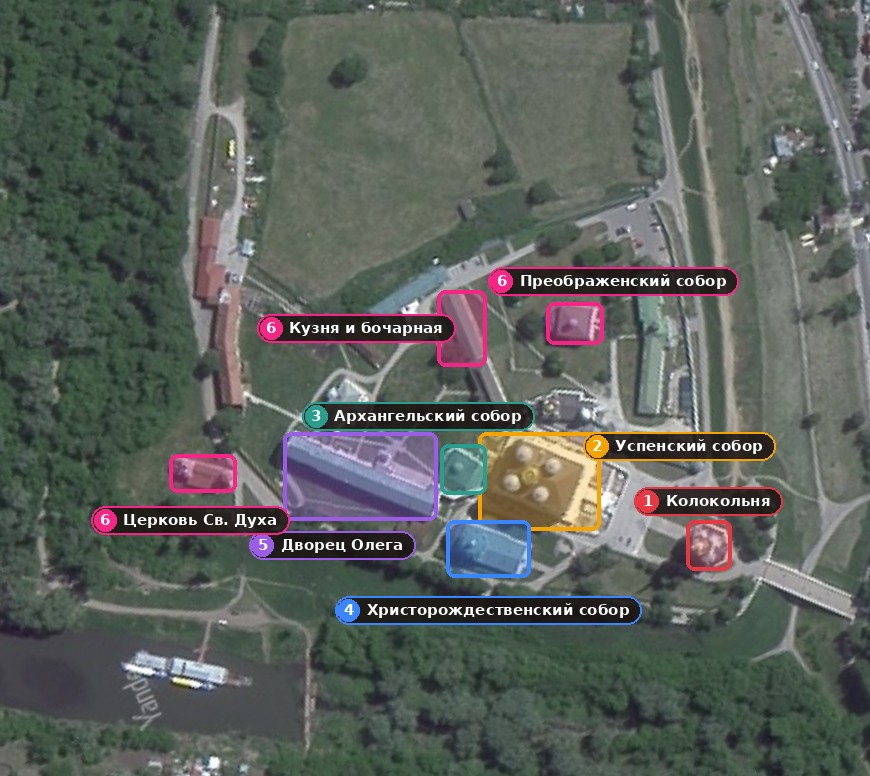
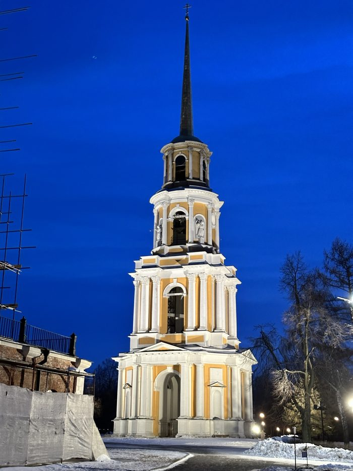
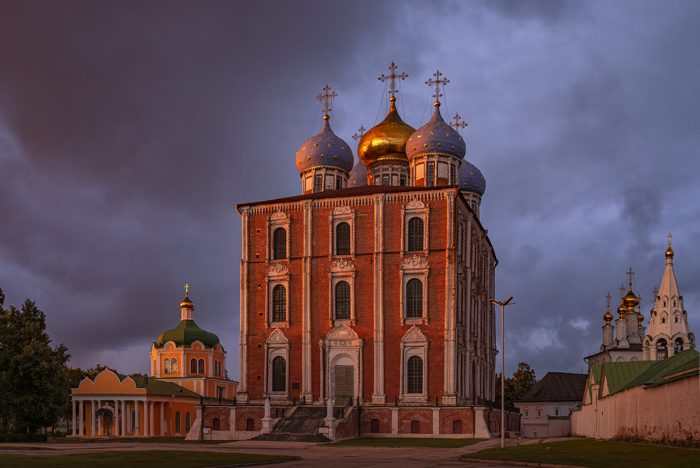
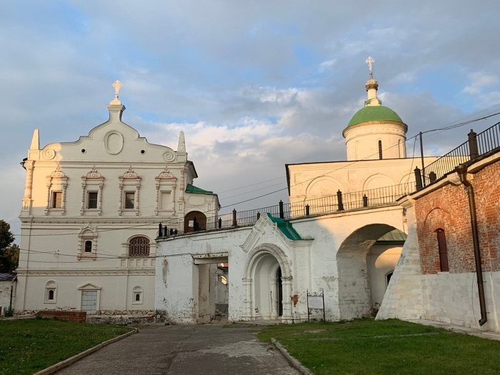
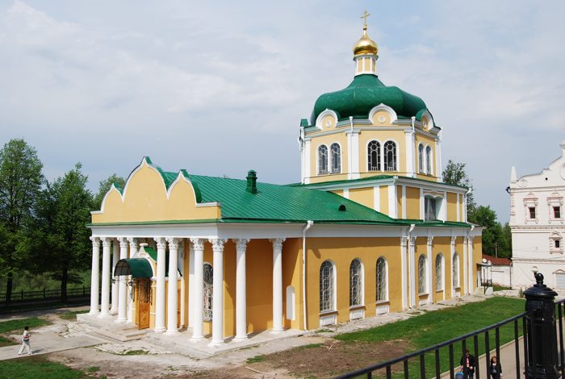
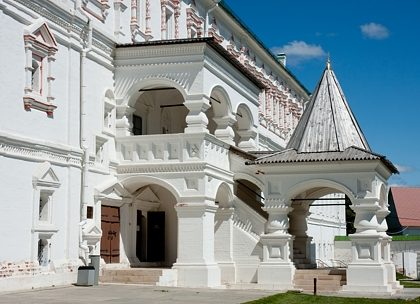
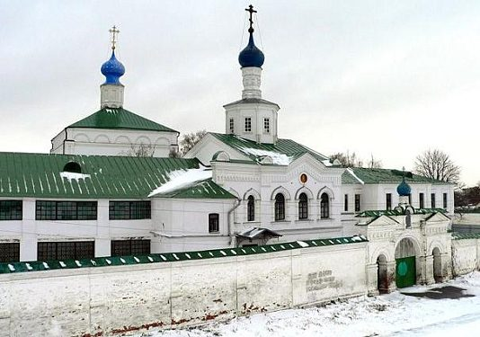

О кремле
Рязанский кремль возник в XI веке на холме при слиянии рек Трубеж и Лыбедь. Город тогда назывался Переяславль-Рязанский, а Рязанью его назвали только в 1778 году по указу Екатерины II.
До наших дней дошли внутренние постройки кремля: соборы, архиерейские палаты и монастырские здания. Из оборонительных сооружений сохранились крепостной вал и ров.
В XIV веке при князе Олеге Рязанском (1351–1402) город пережил расцвет. В 1884 году кремль получил статус музея-заповедника. Сегодня это один из старейших музеев России.
Схема кремля
👆 Нажмите на выделенное цветом здание на схеме (или на его название в списке под схемой), чтобы перейти к описанию.

Обозначения на схеме:
- 1Соборная колокольня
- 2Успенский собор
- 3Архангельский собор
- 4Христорождественский собор
- 5Дворец Олега (музей-заповедник)
- 6Другие постройки: Преображенский собор, Кузня и бочарная, Церковь Сошествия Святого Духа
Кремль на Яндекс.Картах
Главные постройки

1. Соборная колокольня
Стоит сразу за Глебовским мостом у входа в кремль. Четырёхъярусная башня высотой 83 метра увенчана позолоченным шпилем. Строилась почти полвека: с 1789 по 1840 год.

2. Успенский собор
Главный храм Рязанской земли. Построен за семь лет, с 1693 по 1699 год, крепостным зодчим Яковом Бухвостовым. Это образец нарышкинского барокко с семиярусным резным иконостасом.

3. Архангельский собор
Один из древнейших храмов кремля. Он сохранил облик XVI века, а в 1647 году был надстроен.

4. Христорождественский собор
Храм XVII века. Вместе с другими соборами он образует ансамбль соборной площади кремля.

5. Дворец Олега
Каменные палаты XVII века, названные в память о князе Олеге Рязанском. Сегодня здесь размещаются экспозиции музея-заповедника.

6. Другие постройки
На территории кремля также находятся:
- Преображенский собор
- Кузня и бочарная
- Ворота Архиерейского двора
- Церковь Сошествия Святого Духа
- Дом для причта
- Глебовский мост
Справочная информация
| Здание | Годы строительства | Зодчий | Высота, м |
|---|---|---|---|
| Успенский собор | 1693–1699 | Я. Бухвостов | около 28 (до карниза) |
| Соборная колокольня | 1789–1840 | — | 83 |
| Архангельский собор | XVI в., надстроен в 1647 | — | — |
| Христорождественский собор | XVII в. | — | — |
| Дворец Олега | XVII в. | — | — |
Полезные ссылки
Более подробно о Рязани и Рязанском кремле можно прочитать на специализированных сайтах:
⬇ Скачать текст страницы ⬇ Скачать фотографии (zip) ✉ Написать письмо